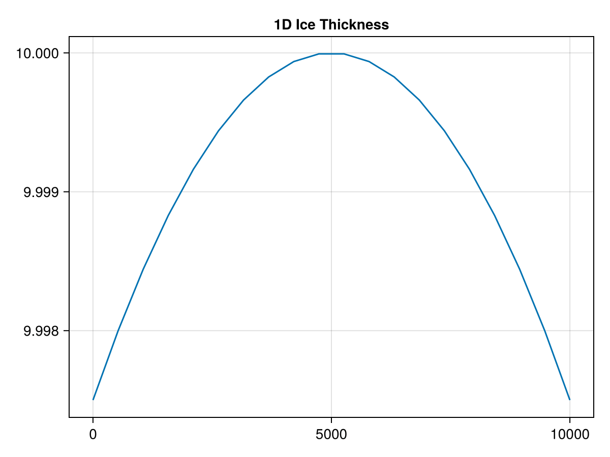
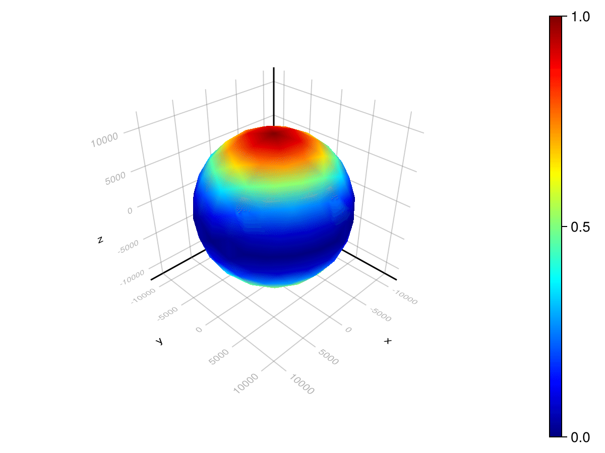

Halfar's model of glacial flow
Let's model glacial flow using a model of how ice height of a glacial sheet changes over time, from P. Halfar's 1981 paper: "On the dynamics of the ice sheets".
# AlgebraicJulia Dependencies
using Catlab
using CombinatorialSpaces
using DiagrammaticEquations
using Decapodes
# External Dependencies
using CairoMakie
using ComponentArrays
using GeometryBasics: Point2, Point3
using JLD2
using LinearAlgebra
using MLStyle
using OrdinaryDiffEq
using SparseArrays
using Statistics
Point2D = Point2{Float64};
Point3D = Point3{Float64};GeometryBasics.Point{3, Float64}Defining the models
The first step is to find a suitable equation for our model, and translate it into the Discrete Exterior Calculus. The Exterior Calculus is a generalization of vector calculus, so for low-dimensional spaces, this translation is straightforward. For example, divergence is typically written as (⋆, d, ⋆). Scalar fields are typically interpreted as "0Forms", i.e. values assigned to vertices of a mesh.
We use the @decapode macro to interpret the equations. Here, we have equation 2 from Halfar:
\[\frac{\partial h}{\partial t} = \frac{2}{n + 2} (\frac{\rho g}{A})^n \frac{\partial}{\partial x}(\frac{\partial h}{\partial x} |\frac{\partial h}{\partial x}| ^{n-1} h^{n+2}).\]
We'll change the term out front to Γ so we can demonstrate composition in a moment.
In the exterior calculus, we could write the above equations like so:
\[\partial_t(h) = \Gamma\quad \circ(\star, d, \star)(d(h)\quad \wedge \quad|d(h)^\sharp|^{n-1} \quad \wedge \quad (h^{n+2})).\]
halfar_eq2 = @decapode begin
h::Form0
Γ::Form0
n::Constant
ḣ == ∂ₜ(h)
ḣ == Γ * ∘(⋆, d, ⋆)(d(h) ∧₁₀ ((mag(♯ᵖᵖ(d(h)))^(n-1)) ∧₀₀ h^(n+2)))
end
to_graphviz(halfar_eq2)And here, a formulation of Glen's law from J.W. Glen's 1958 "The flow law of ice".
glens_law = @decapode begin
Γ::Form0
(A,ρ,g,n)::Constant
Γ == (2/(n+2))*A*(ρ*g)^n
end
to_graphviz(glens_law)Composing models
We can use operadic composition to specify how our models come together. In this example, we have two Decapodes, and two quantities that are shared between them.
ice_dynamics_composition_diagram = @relation () begin
dynamics(Γ,n)
stress(Γ,n)
end
draw_composition(ice_dynamics_composition_diagram)
-->
<!-- Title: G Pages: 1 -->
<svg width="230pt" height="251pt"
viewBox="0.00 0.00 230.10 251.10" xmlns="http://www.w3.org/2000/svg" xmlns:xlink="http://www.w3.org/1999/xlink">
<g id="graph0" class="graph" transform="scale(1 1) rotate(0) translate(4 247.0976)">
<title>G</title>
<polygon fill="%23ffffff" stroke="transparent" points="-4,4 -4,-247.0976 226.0976,-247.0976 226.0976,4 -4,4"/>
<!-- n1 -->
<g id="box1" class="node">
<title>n1</title>
<ellipse fill="none" stroke="%23000000" cx="116.0488" cy="-18" rx="45.1548" ry="18"/>
<text text-anchor="middle" x="116.0488" y="-14.3" font-family="Serif" font-size="14.00" fill="%23000000">dynamics</text>
</g>
<!-- n3 -->
<!-- junction -->
<g id="junction1" class="node">
<title>n3</title>
<ellipse fill="%23000000" stroke="%23000000" cx="12.5" cy="-121.5488" rx="2.5" ry="2.5"/>
<text text-anchor="middle" x="5" y="-127.8488" font-family="Serif" font-size="14.00" fill="%23000000">Γ</text>
</g>
<!-- n1&%2345;&%2345;n3 -->
<g id="edge1" class="edge">
<title>n1&%2345;&%2345;n3</title>
<path fill="none" stroke="%23000000" d="M98.9498,-35.099C72.7559,-61.2929 24.6468,-109.402 14.4363,-119.6125"/>
</g>
<!-- n4 -->
<!-- junction -->
<g id="junction2" class="node">
<title>n4</title>
<ellipse fill="%23000000" stroke="%23000000" cx="219.5976" cy="-121.5488" rx="2.5" ry="2.5"/>
<text text-anchor="middle" x="212.0976" y="-127.8488" font-family="Serif" font-size="14.00" fill="%23000000">n</text>
</g>
<!-- n1&%2345;&%2345;n4 -->
<g id="edge3" class="edge">
<title>n1&%2345;&%2345;n4</title>
<path fill="none" stroke="%23000000" d="M133.1478,-35.099C159.3418,-61.2929 207.4508,-109.402 217.6614,-119.6125"/>
</g>
<!-- n2 -->
<g id="box2" class="node">
<title>n2</title>
<ellipse fill="none" stroke="%23000000" cx="116.0488" cy="-225.0976" rx="30.7213" ry="18"/>
<text text-anchor="middle" x="116.0488" y="-221.3976" font-family="Serif" font-size="14.00" fill="%23000000">stress</text>
</g>
<!-- n2&%2345;&%2345;n3 -->
<g id="edge2" class="edge">
<title>n2&%2345;&%2345;n3</title>
<path fill="none" stroke="%23000000" d="M100.322,-209.3708C74.5228,-183.5716 25.0169,-134.0657 14.4961,-123.5449"/>
</g>
<!-- n2&%2345;&%2345;n4 -->
<g id="edge4" class="edge">
<title>n2&%2345;&%2345;n4</title>
<path fill="none" stroke="%23000000" d="M131.7756,-209.3708C157.5748,-183.5716 207.0807,-134.0657 217.6015,-123.5449"/>
</g>
</g>
</svg>
)
To a apply a composition, we specify which Decapodes to plug into those boxes, and what each calls the corresponding shared variables internally.
ice_dynamics_cospan = oapply(ice_dynamics_composition_diagram,
[Open(halfar_eq2, [:Γ,:n]),
Open(glens_law, [:Γ,:n])])
ice_dynamics = apex(ice_dynamics_cospan)
to_graphviz(ice_dynamics)Provide a semantics
To interpret our composed Decapode, we need to specify what Discrete Exterior Calculus to interpret our quantities in. Let's choose the 1D Discrete Exterior Calculus:
ice_dynamics1D = expand_operators(ice_dynamics)
infer_types!(ice_dynamics1D, op1_inf_rules_1D, op2_inf_rules_1D)
resolve_overloads!(ice_dynamics1D, op1_res_rules_1D, op2_res_rules_1D)
to_graphviz(ice_dynamics1D)Define a mesh
We'll need a mesh to simulate on. Since this is a 1D mesh, we can go ahead and make one right now:
# This is an empty 1D mesh.
s = EmbeddedDeltaSet1D{Bool, Point2D}()
# 20 vertices along a line, connected by edges.
add_vertices!(s, 20, point=Point2D.(range(0, 10_000, length=20), 0))
add_edges!(s, 1:nv(s)-1, 2:nv(s))
orient!(s)
# The dual 1D mesh
sd = EmbeddedDeltaDualComplex1D{Bool, Float64, Point2D}(s)
subdivide_duals!(sd, Circumcenter())Define input data
We need initial conditions to use for our simulation.
n = 3
ρ = 910
g = 9.8
A = 1e-16
# Ice height is a primal 0-form, with values at vertices.
# We choose a distribution that obeys the shallow height and shallow slope conditions.
h₀ = map(point(s)) do (x,_)
10 - ((x-5000)*1e-5)^2
end
# Visualize initial conditions for ice sheet height.
lines(map(x -> x[1], point(s)), h₀, linewidth=5)We need to tell our Decapode which data maps to which symbols. We can wrap up our data like so:
u₀ = ComponentArray(dynamics_h=h₀)
constants_and_parameters = (
n = n,
stress_ρ = ρ,
stress_g = g,
stress_A = A)(n = 3, stress_ρ = 910, stress_g = 9.8, stress_A = 1.0e-16)Generate the simulation
Now, we have everything we need to generate our simulation:
sim = eval(gensim(ice_dynamics1D, dimension=1))
fₘ = sim(sd, nothing)(::Main.var"#f#9"{PreallocationTools.FixedSizeDiffCache{Vector{Float64}, Vector{ForwardDiff.Dual{nothing, Float64, 10}}}, PreallocationTools.FixedSizeDiffCache{Vector{Float64}, Vector{ForwardDiff.Dual{nothing, Float64, 10}}}, PreallocationTools.FixedSizeDiffCache{Vector{Float64}, Vector{ForwardDiff.Dual{nothing, Float64, 10}}}, PreallocationTools.FixedSizeDiffCache{Vector{Float64}, Vector{ForwardDiff.Dual{nothing, Float64, 10}}}, PreallocationTools.FixedSizeDiffCache{Vector{Float64}, Vector{ForwardDiff.Dual{nothing, Float64, 10}}}, SparseArrays.SparseMatrixCSC{Float64, Int64}, Decapodes.var"#22#24"{1, Tuple{Matrix{Int32}, Int64}}, Decapodes.var"#5#10"{Decapodes.var"#4#9"}, Decapodes.var"#5#10"{Decapodes.var"#36#37"{CombinatorialSpaces.DiscreteExteriorCalculus.EmbeddedDeltaDualComplex1D{Bool, Float64, GeometryBasics.Point{2, Float64}}}}, SparseArrays.SparseMatrixCSC{Int8, Int32}}) (generic function with 1 method)Pre-compile and run
The first time that you run a function, Julia will pre-compile it, so that later runs will be fast. We'll solve our simulation for a short time span, to trigger this pre-compilation, and then run it.
@info("Precompiling Solver")
prob = ODEProblem(fₘ, u₀, (0, 1e-8), constants_and_parameters)
soln = solve(prob, Tsit5())
soln.retcode != :Unstable || error("Solver was not stable")
tₑ = 3e17
# This next run should be fast.
@info("Solving")
prob = ODEProblem(fₘ, u₀, (0, tₑ), constants_and_parameters)
soln = solve(prob, Tsit5())
@show soln.retcode
@info("Done")[ Info: Precompiling Solver
[ Info: Solving
soln.retcode = SciMLBase.ReturnCode.Success
[ Info: DoneWe can save our solution file in case we want to examine its contents when this Julia session ends.
@save "ice_dynamics1D.jld2" soln┌ Warning: Attempting to store Decapodes.var"#22#24"{1, Tuple{Matrix{Int32}, Int64}}.
│ JLD2 only stores functions by name.
│ This may not be useful for anonymous functions.
└ @ JLD2 ~/.julia/packages/JLD2/nPYlZ/src/data/writing_datatypes.jl:447
┌ Warning: Attempting to store Decapodes.var"#5#10"{Decapodes.var"#4#9"}.
│ JLD2 only stores functions by name.
│ This may not be useful for anonymous functions.
└ @ JLD2 ~/.julia/packages/JLD2/nPYlZ/src/data/writing_datatypes.jl:447
┌ Warning: Attempting to store Decapodes.var"#4#9".
│ JLD2 only stores functions by name.
│ This may not be useful for anonymous functions.
└ @ JLD2 ~/.julia/packages/JLD2/nPYlZ/src/data/writing_datatypes.jl:447
┌ Warning: Attempting to store Decapodes.var"#36#37"{CombinatorialSpaces.DiscreteExteriorCalculus.EmbeddedDeltaDualComplex1D{Bool, Float64, GeometryBasics.Point{2, Float64}}}.
│ JLD2 only stores functions by name.
│ This may not be useful for anonymous functions.
└ @ JLD2 ~/.julia/packages/JLD2/nPYlZ/src/data/writing_datatypes.jl:447
┌ Warning: Attempting to store Decapodes.var"#5#10"{Decapodes.var"#36#37"{CombinatorialSpaces.DiscreteExteriorCalculus.EmbeddedDeltaDualComplex1D{Bool, Float64, GeometryBasics.Point{2, Float64}}}}.
│ JLD2 only stores functions by name.
│ This may not be useful for anonymous functions.
└ @ JLD2 ~/.julia/packages/JLD2/nPYlZ/src/data/writing_datatypes.jl:447
┌ Warning: Attempting to store Main.var"#f#9"{PreallocationTools.FixedSizeDiffCache{Vector{Float64}, Vector{ForwardDiff.Dual{nothing, Float64, 10}}}, PreallocationTools.FixedSizeDiffCache{Vector{Float64}, Vector{ForwardDiff.Dual{nothing, Float64, 10}}}, PreallocationTools.FixedSizeDiffCache{Vector{Float64}, Vector{ForwardDiff.Dual{nothing, Float64, 10}}}, PreallocationTools.FixedSizeDiffCache{Vector{Float64}, Vector{ForwardDiff.Dual{nothing, Float64, 10}}}, PreallocationTools.FixedSizeDiffCache{Vector{Float64}, Vector{ForwardDiff.Dual{nothing, Float64, 10}}}, SparseArrays.SparseMatrixCSC{Float64, Int64}, Decapodes.var"#22#24"{1, Tuple{Matrix{Int32}, Int64}}, Decapodes.var"#5#10"{Decapodes.var"#4#9"}, Decapodes.var"#5#10"{Decapodes.var"#36#37"{CombinatorialSpaces.DiscreteExteriorCalculus.EmbeddedDeltaDualComplex1D{Bool, Float64, GeometryBasics.Point{2, Float64}}}}, SparseArrays.SparseMatrixCSC{Int8, Int32}}.
│ JLD2 only stores functions by name.
│ This may not be useful for anonymous functions.
└ @ JLD2 ~/.julia/packages/JLD2/nPYlZ/src/data/writing_datatypes.jl:447
┌ Warning: Attempting to store Decapodes.var"#5#10"{Decapodes.var"#4#9"}.
│ JLD2 only stores functions by name.
│ This may not be useful for anonymous functions.
└ @ JLD2 ~/.julia/packages/JLD2/nPYlZ/src/data/writing_datatypes.jl:447
┌ Warning: Attempting to store Decapodes.var"#4#9".
│ JLD2 only stores functions by name.
│ This may not be useful for anonymous functions.
└ @ JLD2 ~/.julia/packages/JLD2/nPYlZ/src/data/writing_datatypes.jl:447
┌ Warning: Attempting to store SciMLBase.ODEFunction{true, SciMLBase.AutoSpecialize, Main.var"#f#9"{PreallocationTools.FixedSizeDiffCache{Vector{Float64}, Vector{ForwardDiff.Dual{nothing, Float64, 10}}}, PreallocationTools.FixedSizeDiffCache{Vector{Float64}, Vector{ForwardDiff.Dual{nothing, Float64, 10}}}, PreallocationTools.FixedSizeDiffCache{Vector{Float64}, Vector{ForwardDiff.Dual{nothing, Float64, 10}}}, PreallocationTools.FixedSizeDiffCache{Vector{Float64}, Vector{ForwardDiff.Dual{nothing, Float64, 10}}}, PreallocationTools.FixedSizeDiffCache{Vector{Float64}, Vector{ForwardDiff.Dual{nothing, Float64, 10}}}, SparseArrays.SparseMatrixCSC{Float64, Int64}, Decapodes.var"#22#24"{1, Tuple{Matrix{Int32}, Int64}}, Decapodes.var"#5#10"{Decapodes.var"#4#9"}, Decapodes.var"#5#10"{Decapodes.var"#36#37"{CombinatorialSpaces.DiscreteExteriorCalculus.EmbeddedDeltaDualComplex1D{Bool, Float64, GeometryBasics.Point{2, Float64}}}}, SparseArrays.SparseMatrixCSC{Int8, Int32}}, LinearAlgebra.UniformScaling{Bool}, Nothing, Nothing, Nothing, Nothing, Nothing, Nothing, Nothing, Nothing, Nothing, Nothing, Nothing, typeof(SciMLBase.DEFAULT_OBSERVED), Nothing, Nothing, Nothing, Nothing}.
│ JLD2 only stores functions by name.
│ This may not be useful for anonymous functions.
└ @ JLD2 ~/.julia/packages/JLD2/nPYlZ/src/data/writing_datatypes.jl:447Visualize
Let's examine the final conditions:
fig,ax,ob = lines(map(x -> x[1], point(s)), soln(tₑ).dynamics_h, linewidth=5)
ylims!(ax, extrema(h₀))
figWe see that our distribution converges to a more uniform ice height across our domain, which matches our physical intuition.
Let's create a GIF to examine an animation of these dynamics:
# Create a gif
begin
time = Observable(0.0)
ys = @lift(getproperty(soln($time), :dynamics_h))
xcoords = map(x -> x[1], point(s))
fig, ax, ob = lines(xcoords, ys, colorrange=extrema(h₀);
axis = (; title = "1D Ice Thickness"))
record(fig, "ice_dynamics1D.gif", range(0, tₑ, length=30); framerate=15) do t
time[] = t
end
end"ice_dynamics1D.gif"
2D Re-interpretation
The first, one-dimensional, semantics that we provided to our Decapode restricted the kinds of glacial sheets that we could model. (i.e. We could only look at glacial sheets which were constant along y). We can give our Decapode an alternate semantics, as some physics on a 2-dimensional manifold.
Note that for these physics, we make no adjustments to the underlying "dimension-agnostic" Decapode, we only provide a different set of rules for inferring what the type of each quantity is.
ice_dynamics2D = expand_operators(ice_dynamics)
infer_types!(ice_dynamics2D)
resolve_overloads!(ice_dynamics2D)
to_graphviz(ice_dynamics2D)Store as JSON
We quickly demonstrate how to serialize a Decapode to JSON and read it back in:
write_json_acset(ice_dynamics2D, "ice_dynamics2D.json")"ice_dynamics2D.json"You can view the JSON file here.
# When reading back in, we specify that all attributes are "Symbol"s.
ice_dynamics2 = read_json_acset(SummationDecapode{Symbol,Symbol,Symbol}, "ice_dynamics2D.json")
# Or, you could choose to interpret the data as "String"s.
ice_dynamics3 = read_json_acset(SummationDecapode{String,String,String}, "ice_dynamics2D.json")
to_graphviz(ice_dynamics3)Define our mesh
s = triangulated_grid(10_000,10_000,800,800,Point3D)
sd = EmbeddedDeltaDualComplex2D{Bool, Float64, Point3D}(s)
subdivide_duals!(sd, Barycenter())
fig = Figure()
ax = CairoMakie.Axis(fig[1,1])
wf = wireframe!(ax, s)
figDefine our input data
n = 3
ρ = 910
g = 9.8
A = 1e-16
# Ice height is a primal 0-form, with values at vertices.
h₀ = map(point(s)) do (x,y)
(7072-((x-5000)^2 + (y-5000)^2)^(1/2))/9e3+10
end
# Visualize initial condition for ice sheet height.
mesh(s, color=h₀, colormap=:jet)
fig = Figure()
ax = CairoMakie.Axis(fig[1,1])
msh = mesh!(ax, s, color=h₀, colormap=:jet)
Colorbar(fig[1,2], msh)
figu₀ = ComponentArray(dynamics_h=h₀)
constants_and_parameters = (
n = n,
stress_ρ = ρ,
stress_g = g,
stress_A = A)(n = 3, stress_ρ = 910, stress_g = 9.8, stress_A = 1.0e-16)Generate simulation
sim = eval(gensim(ice_dynamics2D, dimension=2))
fₘ = sim(sd, nothing)(::Main.var"#f#24"{PreallocationTools.FixedSizeDiffCache{Vector{Float64}, Vector{ForwardDiff.Dual{nothing, Float64, 12}}}, PreallocationTools.FixedSizeDiffCache{Vector{Float64}, Vector{ForwardDiff.Dual{nothing, Float64, 12}}}, PreallocationTools.FixedSizeDiffCache{Vector{Float64}, Vector{ForwardDiff.Dual{nothing, Float64, 12}}}, PreallocationTools.FixedSizeDiffCache{Vector{Float64}, Vector{ForwardDiff.Dual{nothing, Float64, 12}}}, PreallocationTools.FixedSizeDiffCache{Vector{Float64}, Vector{ForwardDiff.Dual{nothing, Float64, 12}}}, SparseArrays.SparseMatrixCSC{Float64, Int32}, Decapodes.var"#22#24"{1, Tuple{Matrix{Int32}, Int64}}, Decapodes.var"#5#10"{Decapodes.var"#4#9"}, Decapodes.var"#5#10"{Decapodes.var"#38#39"{SparseArrays.SparseMatrixCSC{GeometryBasics.Point{3, Float64}, Int64}}}, SparseArrays.SparseMatrixCSC{Int8, Int32}}) (generic function with 1 method)Pre-compile and run 2D
@info("Precompiling Solver")
# We run for a short timespan to pre-compile.
prob = ODEProblem(fₘ, u₀, (0, 1e-8), constants_and_parameters)
soln = solve(prob, Tsit5())
soln.retcode != :Unstable || error("Solver was not stable")truetₑ = 5e13
@info("Solving")
prob = ODEProblem(fₘ, u₀, (0, tₑ), constants_and_parameters)
soln = solve(prob, Tsit5())
@show soln.retcode
@info("Done")[ Info: Solving
soln.retcode = SciMLBase.ReturnCode.Success
[ Info: Done@save "ice_dynamics2D.jld2" soln┌ Warning: Attempting to store Decapodes.var"#22#24"{1, Tuple{Matrix{Int32}, Int64}}.
│ JLD2 only stores functions by name.
│ This may not be useful for anonymous functions.
└ @ JLD2 ~/.julia/packages/JLD2/nPYlZ/src/data/writing_datatypes.jl:447
┌ Warning: Attempting to store Decapodes.var"#5#10"{Decapodes.var"#4#9"}.
│ JLD2 only stores functions by name.
│ This may not be useful for anonymous functions.
└ @ JLD2 ~/.julia/packages/JLD2/nPYlZ/src/data/writing_datatypes.jl:447
┌ Warning: Attempting to store Decapodes.var"#4#9".
│ JLD2 only stores functions by name.
│ This may not be useful for anonymous functions.
└ @ JLD2 ~/.julia/packages/JLD2/nPYlZ/src/data/writing_datatypes.jl:447
┌ Warning: Attempting to store Decapodes.var"#38#39"{SparseArrays.SparseMatrixCSC{GeometryBasics.Point{3, Float64}, Int64}}.
│ JLD2 only stores functions by name.
│ This may not be useful for anonymous functions.
└ @ JLD2 ~/.julia/packages/JLD2/nPYlZ/src/data/writing_datatypes.jl:447
┌ Warning: Attempting to store Decapodes.var"#5#10"{Decapodes.var"#38#39"{SparseArrays.SparseMatrixCSC{GeometryBasics.Point{3, Float64}, Int64}}}.
│ JLD2 only stores functions by name.
│ This may not be useful for anonymous functions.
└ @ JLD2 ~/.julia/packages/JLD2/nPYlZ/src/data/writing_datatypes.jl:447
┌ Warning: Attempting to store Main.var"#f#24"{PreallocationTools.FixedSizeDiffCache{Vector{Float64}, Vector{ForwardDiff.Dual{nothing, Float64, 12}}}, PreallocationTools.FixedSizeDiffCache{Vector{Float64}, Vector{ForwardDiff.Dual{nothing, Float64, 12}}}, PreallocationTools.FixedSizeDiffCache{Vector{Float64}, Vector{ForwardDiff.Dual{nothing, Float64, 12}}}, PreallocationTools.FixedSizeDiffCache{Vector{Float64}, Vector{ForwardDiff.Dual{nothing, Float64, 12}}}, PreallocationTools.FixedSizeDiffCache{Vector{Float64}, Vector{ForwardDiff.Dual{nothing, Float64, 12}}}, SparseArrays.SparseMatrixCSC{Float64, Int32}, Decapodes.var"#22#24"{1, Tuple{Matrix{Int32}, Int64}}, Decapodes.var"#5#10"{Decapodes.var"#4#9"}, Decapodes.var"#5#10"{Decapodes.var"#38#39"{SparseArrays.SparseMatrixCSC{GeometryBasics.Point{3, Float64}, Int64}}}, SparseArrays.SparseMatrixCSC{Int8, Int32}}.
│ JLD2 only stores functions by name.
│ This may not be useful for anonymous functions.
└ @ JLD2 ~/.julia/packages/JLD2/nPYlZ/src/data/writing_datatypes.jl:447
┌ Warning: Attempting to store Decapodes.var"#5#10"{Decapodes.var"#4#9"}.
│ JLD2 only stores functions by name.
│ This may not be useful for anonymous functions.
└ @ JLD2 ~/.julia/packages/JLD2/nPYlZ/src/data/writing_datatypes.jl:447
┌ Warning: Attempting to store Decapodes.var"#4#9".
│ JLD2 only stores functions by name.
│ This may not be useful for anonymous functions.
└ @ JLD2 ~/.julia/packages/JLD2/nPYlZ/src/data/writing_datatypes.jl:447
┌ Warning: Attempting to store SciMLBase.ODEFunction{true, SciMLBase.AutoSpecialize, Main.var"#f#24"{PreallocationTools.FixedSizeDiffCache{Vector{Float64}, Vector{ForwardDiff.Dual{nothing, Float64, 12}}}, PreallocationTools.FixedSizeDiffCache{Vector{Float64}, Vector{ForwardDiff.Dual{nothing, Float64, 12}}}, PreallocationTools.FixedSizeDiffCache{Vector{Float64}, Vector{ForwardDiff.Dual{nothing, Float64, 12}}}, PreallocationTools.FixedSizeDiffCache{Vector{Float64}, Vector{ForwardDiff.Dual{nothing, Float64, 12}}}, PreallocationTools.FixedSizeDiffCache{Vector{Float64}, Vector{ForwardDiff.Dual{nothing, Float64, 12}}}, SparseArrays.SparseMatrixCSC{Float64, Int32}, Decapodes.var"#22#24"{1, Tuple{Matrix{Int32}, Int64}}, Decapodes.var"#5#10"{Decapodes.var"#4#9"}, Decapodes.var"#5#10"{Decapodes.var"#38#39"{SparseArrays.SparseMatrixCSC{GeometryBasics.Point{3, Float64}, Int64}}}, SparseArrays.SparseMatrixCSC{Int8, Int32}}, LinearAlgebra.UniformScaling{Bool}, Nothing, Nothing, Nothing, Nothing, Nothing, Nothing, Nothing, Nothing, Nothing, Nothing, Nothing, typeof(SciMLBase.DEFAULT_OBSERVED), Nothing, Nothing, Nothing, Nothing}.
│ JLD2 only stores functions by name.
│ This may not be useful for anonymous functions.
└ @ JLD2 ~/.julia/packages/JLD2/nPYlZ/src/data/writing_datatypes.jl:447Visualize 2D
# Final conditions:
fig = Figure()
ax = CairoMakie.Axis(fig[1,1])
msh = mesh!(ax, s, color=soln(tₑ).dynamics_h, colormap=:jet, colorrange=extrema(soln(0).dynamics_h))
Colorbar(fig[1,2], msh)
figbegin
frames = 100
fig = Figure()
ax = CairoMakie.Axis(fig[1,1])
msh = CairoMakie.mesh!(ax, s, color=soln(0).dynamics_h, colormap=:jet, colorrange=extrema(soln(0).dynamics_h))
Colorbar(fig[1,2], msh)
record(fig, "ice_dynamics2D.gif", range(0.0, tₑ; length=frames); framerate = 15) do t
msh.color = soln(t).dynamics_h
end
end"ice_dynamics2D.gif"
2-Manifold in 3D
We note that just because our physics is happening on a 2-manifold, (a surface), this doesn't restrict us to the 2D plane. In fact, we can "embed" our 2-manifold in 3D space to simulate a glacial sheets spread across the globe.
s = loadmesh(Icosphere(3, 10_000))
sd = EmbeddedDeltaDualComplex2D{Bool, Float64, Point3D}(s)
subdivide_duals!(sd, Barycenter())
wireframe(sd)n = 3
ρ = 910
g = 9.8
A = 1e-16
# Ice height is a primal 0-form, with values at vertices.
h₀ = map(point(s)) do (x,y,z)
(z*z)/(10_000*10_000)
end
# Visualize initial condition for ice sheet height.
# There is lots of ice at the poles, and no ice at the equator.
fig = Figure()
ax = LScene(fig[1,1], scenekw=(lights=[],))
msh = CairoMakie.mesh!(ax, s, color=h₀, colormap=:jet)
Colorbar(fig[1,2], msh)
figu₀ = ComponentArray(dynamics_h=h₀)
constants_and_parameters = (
n = n,
stress_ρ = ρ,
stress_g = g,
stress_A = A)(n = 3, stress_ρ = 910, stress_g = 9.8, stress_A = 1.0e-16)sim = eval(gensim(ice_dynamics2D, dimension=2))
fₘ = sim(sd, nothing)(::Main.var"#f#33"{PreallocationTools.FixedSizeDiffCache{Vector{Float64}, Vector{ForwardDiff.Dual{nothing, Float64, 12}}}, PreallocationTools.FixedSizeDiffCache{Vector{Float64}, Vector{ForwardDiff.Dual{nothing, Float64, 12}}}, PreallocationTools.FixedSizeDiffCache{Vector{Float64}, Vector{ForwardDiff.Dual{nothing, Float64, 12}}}, PreallocationTools.FixedSizeDiffCache{Vector{Float64}, Vector{ForwardDiff.Dual{nothing, Float64, 12}}}, PreallocationTools.FixedSizeDiffCache{Vector{Float64}, Vector{ForwardDiff.Dual{nothing, Float64, 12}}}, SparseArrays.SparseMatrixCSC{Float64, Int32}, Decapodes.var"#22#24"{1, Tuple{Matrix{Int32}, Int64}}, Decapodes.var"#5#10"{Decapodes.var"#4#9"}, Decapodes.var"#5#10"{Decapodes.var"#38#39"{SparseArrays.SparseMatrixCSC{GeometryBasics.Point{3, Float64}, Int64}}}, SparseArrays.SparseMatrixCSC{Int8, Int32}}) (generic function with 1 method)For brevity's sake, we'll skip the pre-compilation cell.
tₑ = 5e25
@info("Solving")
prob = ODEProblem(fₘ, u₀, (0, tₑ), constants_and_parameters)
soln = solve(prob, Tsit5())
@show soln.retcode
@info("Done")
# Compare the extrema of the initial and final conditions of ice height.
extrema(soln(0).dynamics_h), extrema(soln(tₑ).dynamics_h)((0.0, 1.0), (0.3248007694428785, 0.34581812444119503))fig = Figure()
ax = LScene(fig[1,1], scenekw=(lights=[],))
msh = CairoMakie.mesh!(ax, s, color=soln(tₑ).dynamics_h, colormap=:jet, colorrange=extrema(soln(0).dynamics_h))
Colorbar(fig[1,2], msh)
figbegin
frames = 200
fig = Figure()
ax = LScene(fig[1,1], scenekw=(lights=[],))
msh = CairoMakie.mesh!(ax, s, color=soln(0).dynamics_h, colormap=:jet, colorrange=extrema(soln(0).dynamics_h))
Colorbar(fig[1,2], msh)
# These particular initial conditions diffuse quite quickly, so let's just look at
# the first moments of those dynamics.
record(fig, "ice_dynamics2D_sphere.gif", range(0.0, tₑ/64; length=frames); framerate = 20) do t
msh.color = soln(t).dynamics_h
end
end"ice_dynamics2D_sphere.gif"
[ Info: Page built in 45 seconds.
[ Info: This page was last built at 2025-03-07T17:29:22.367.